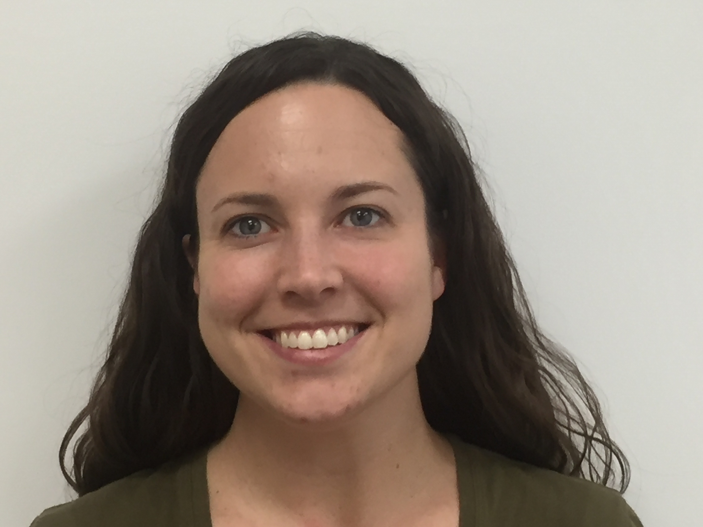
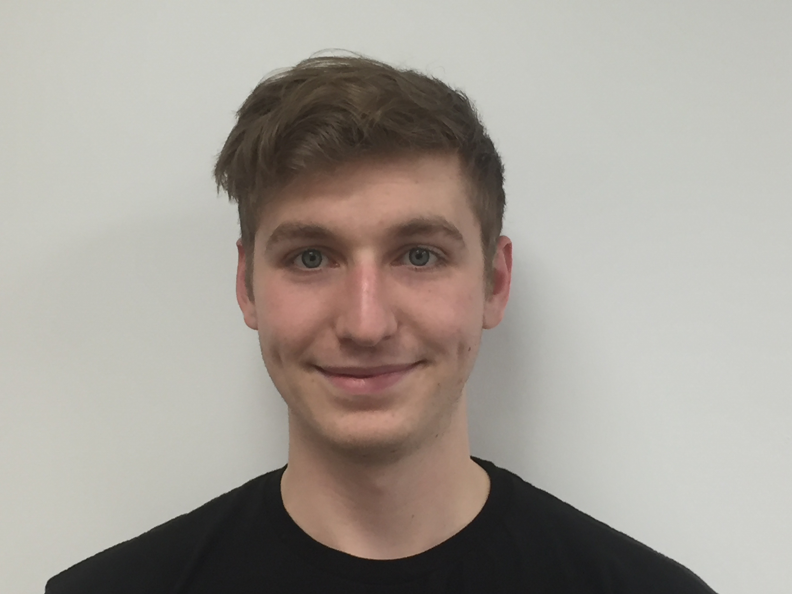
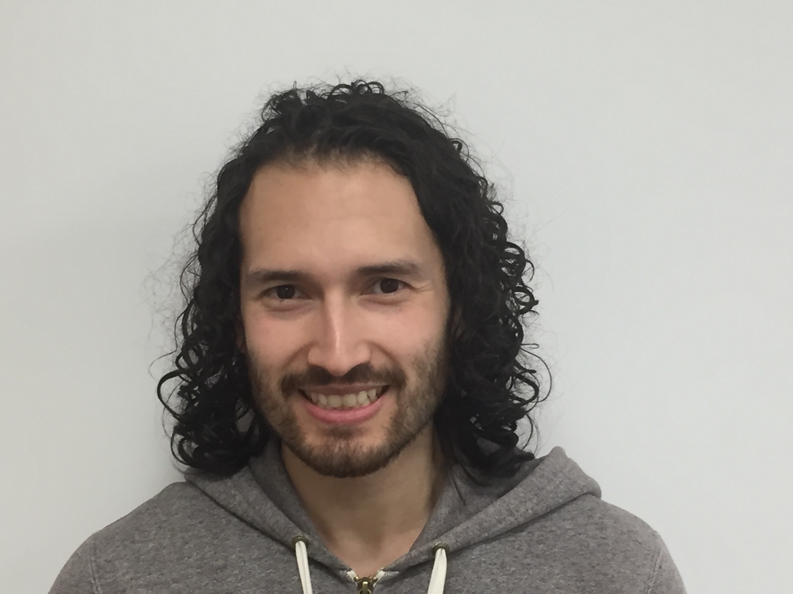
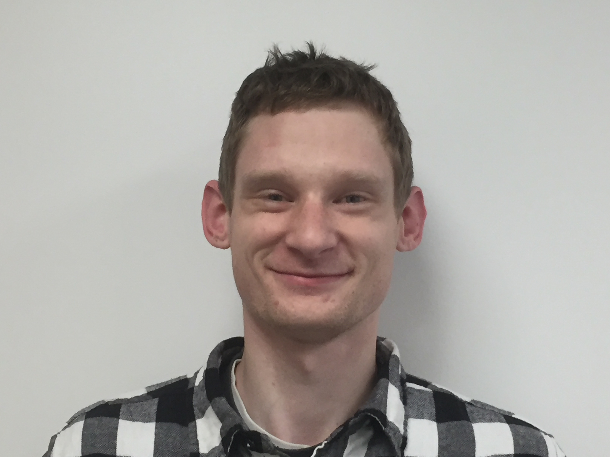
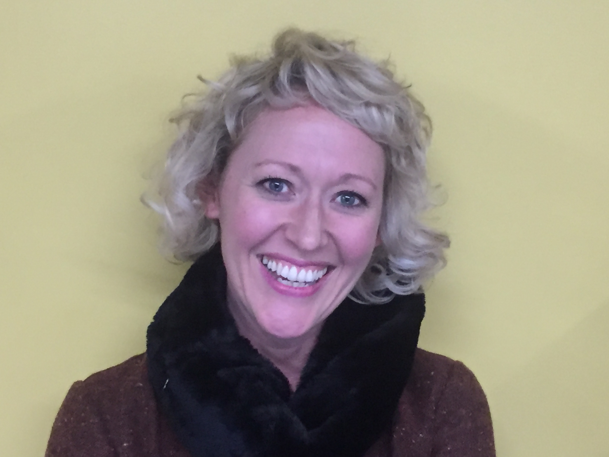
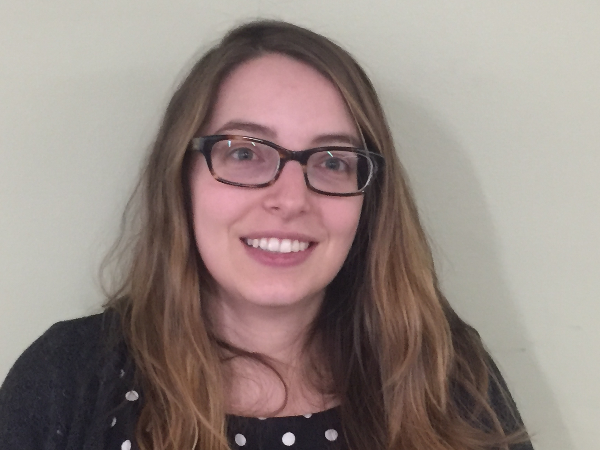
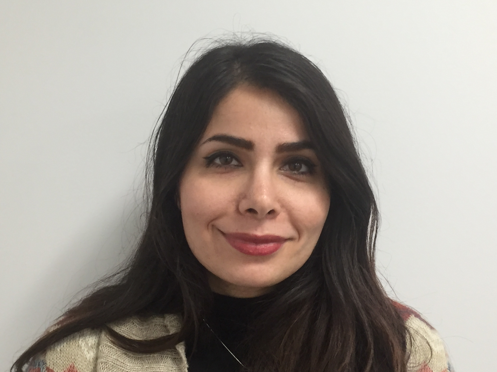
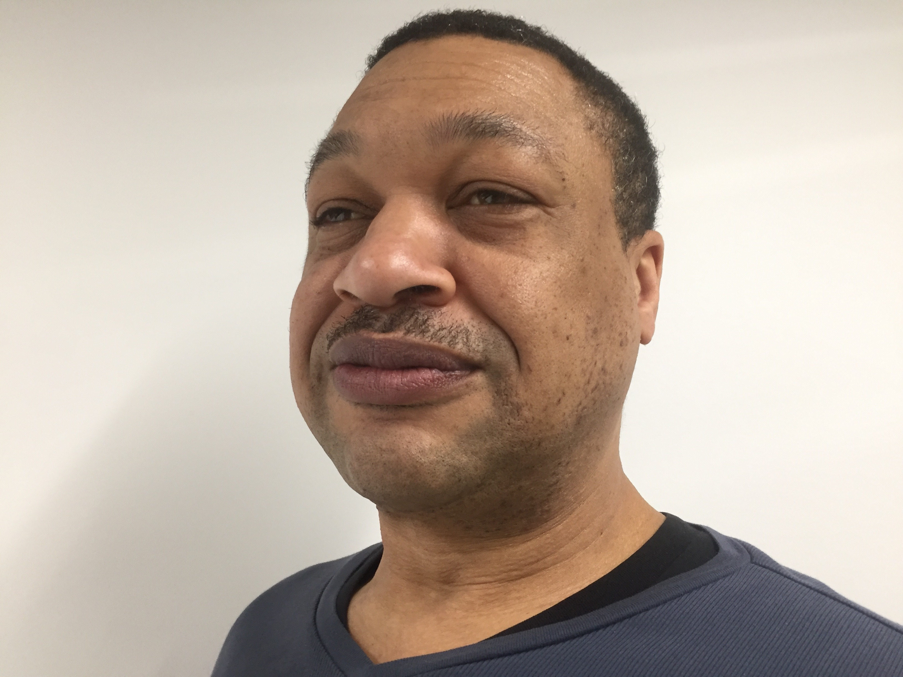

ALLIE GRAMPA

Allie is originally from Cleveland, Ohio. By default, she is a Browns fan, which is a tough life to lead but she does it with passion. She started learning the basics of coding while working for a wedding website called Joy and that sparked her interest in computer programming and led her to Code Fellows! Since moving to Seattle, she has spent a lot of time hiking and snowboarding. She is always on the hunt for the perfect sushi, perfect pizza, and perfect chocolate chip cookie. One of her favorite Seattle activities is walking around Pike Place Market while eating mini maple bacon donuts from Daily Dozen.
agrampa@yahoo.com
https://github.com/agrampa
LOGAN ABSHER

The things I really enjoy in life are cats videos, cats, video games, swimming, cooking, and spending time with my friends and girlfriend. I started coding about a year ago using java in my CSC 142 and 143 classes, I decided I really liked coding, but I wasn’t really sure where to go from there because college is really expensive and I felt I was learning a lot of useless information. I went into my brother’s workplace and met a few of his coworkers, who are Code Fellows alumni. I talked with them and they highly recommended this bootcamp.
absherlogan@gmail.com
https://github.com/loganabsher
LUIS MANZO

After graduating high school in Los Angeles, CA, Luis joined the Air Force where he worked as a meteorologist. He became fascinated with meteorological models and the technology involved. Seeing this interest, his supervisor suggested he take over the technical aspects of his squadron and from then on, his main interest has been coding. He also likes table tennis, golden retrievers and studying ancient languages.
manzosk3@gmail.com
https://github.com/ctcrnitv
DAVID TEDDY

The reason I started looking into coding is I knew I wanted to to upgrade my life and do something I really enjoyed. I knew that I was not doing well as a mechanic and I hated always being disgusting and going home after work bruised and battered. I was told by my fiance's dad about Code Fellows and I am so glad and excited to be able to do this. I am a passionate reader with no care which type as long as it keeps my attention. I enjoy playing a well thought out video game and love to read and watch videos that coincide with said video game. While in the military I was enjoying the life of adventure but was cut short by Crohn’s Disease and was medically retired. I miss the camaraderie and brotherhood that came along with the military and heard that it was the same in the coding world.
davidteddy@gmail.com
https://github.com/tedsters
We want to say Thank You to Rachel, Tracey, Rozi, and JP!! Thank you for all of your help in 201!!




Sources/things we stole:
Web pages:
http://www167.lunapic.com/
https://thepiratebay.org/
http://www.avatarsinpixels.com/
Music:
game music: FTL-Soundtrack
boss fight: Xythe
credits song: Ludovico Einaudi-Nouvelle Blanche